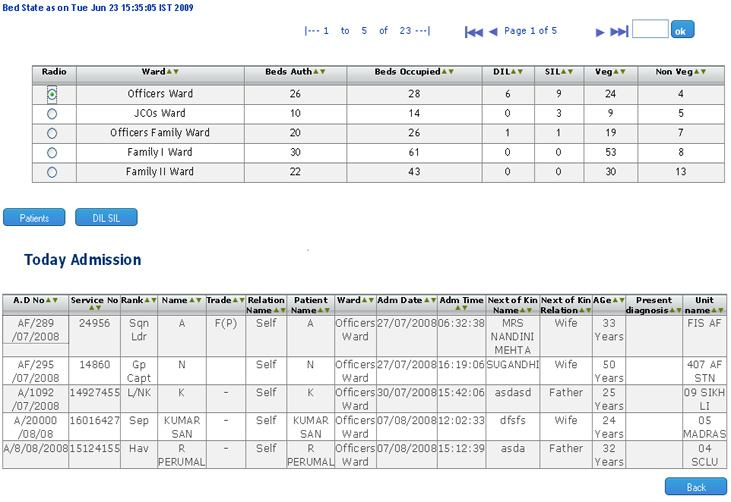

Daily Bed Status
Screen Overview
From Daily bed status screen we can view the comppact information of Inpatient. we can view the ward wise admitted patient list, SI/DI list, Veg/Non.Veg patient list, Total authorized bed and occupied bed of the ward and the patient detail of the admitted patient of the selected ward.
